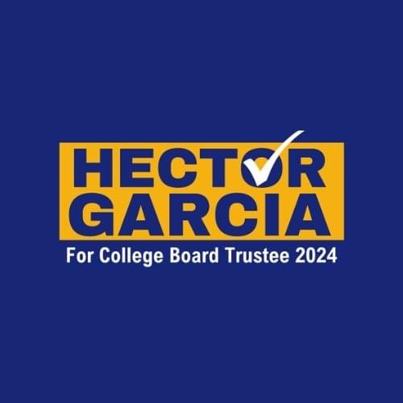

Vir Sinha
I am currently interning with the Riverside County Office of Education, where I assist the Instructional Services department in project-based and administrative work. This role has strengthened my administrative and analytical skills while gaining experience coordinating logistics for events, skills that will be invaluable in a fast-paced environment. Working in this professional setting has given me insight on how to conduct myself appropriately in such a setting.e
Additionally, as a student intern with Iconic Strategies, I had the opportunity to work on several local political campaigns in the East Bay Area. This experience sparked my interest in local political work and showed me the importance of civic involvement at the community level.
At UC Riverside, I serve as a Dean’s Brand Ambassador, collaborating with a team to manage external relations for the School of Public Policy, representing our school professionally in the Riverside community. My work with event planning, external relations, and public communications - such as writing news releases and engaging with faculty and community members - has strengthened my ability to interact with esteemed figures and elected officials effectively and professionally.
Experience
RCOE Superintendent’s Office Intern
• Support the Instructional Services department by assisting managers and staff with administrative and project-based tasks
• Coordinate logistics and contribute to the successful execution of educational seminars for over 150 attendees
• Compile and analyze research, generating comprehensive reports using Microsoft Word and Excel
Iconic Strategies Student Intern
• Assisted campaign consultants on 7 local political campaigns in the East Bay Area by drafting documents and managing social media strategies
• Designed and managed social media accounts for 2 local political candidates, creating engaging content to boost voter outreach
• Organized and hosted campaign fundraisers and events, attracting over 50 attendees
Barista/Cashier
• Handled 100+ customer inquiries, took 100+ orders, and offered recommendations with a friendly and helpful attitude.
• Worked collaboratively with other 3+ team members to ensure smooth operations during peak hours, leading 4+ novice employees in training
• Handled cash transactions accurately, providing correct change and balancing financial transactions
Education
UC Riverside
Portfolio

.jpeg)
.jpeg)
.jpeg)